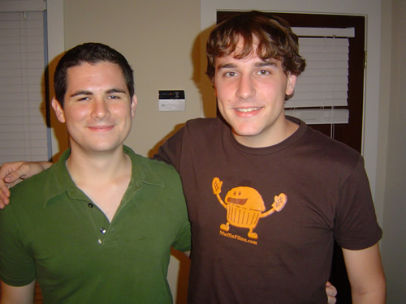

This is my friend Paul. He seems like a normal enough guy, but he's really more than meets the eye. I first met Paul during my Junior Year while he was paling around with that boyfriend of his, Kyle (who both thankfully remains intertwined). It was a very balanced match. While Kyle is outgoing and engaging, Paul has always been very personable and warm. I'm am very happy that Kyle and Paul are together, but even more happy that I got a chance to get to know Paul, who has become a very good friend of mine
Paul has always been very friendly, but always somewhat reserved compared to Kyle. The exception to that rule would be when Paul gets the chance to let loose and party with the rest of us. I seem to remember a particular evening with Kyle, Paul, and Marilia outside of Chip's apartment when, during mid-conversation, Paul decided he needed to throw up alittle. Oh, don't be grossed out, he did it in the most polite and expedient way—it was quite remarkable. I was drunk myself at the time and I was very impressed with Paul's dexterity. We were sure to blame it on the nonexistent rude drunk guy that came to vomit and left.

I'm sure Paul's going to end up employed for some profitable business and he'll be racking in big bucks while the rest of us are kicking ourselves for not getting an MBA. Oh, and the day Paul becomes a pro-business Republican at the vehement disapproval of his boyfriend Kyle will be a day I would not want to miss! Good luck with that, Paul ;-)
I'll be sure to catch Paul during one of his power lunches in the near future, somewhere between Wall Street, NY and Midtown, Atlanta. He's going someplace exciting and I'm sure our paths will cross on more than one occasion. If anything, I'll see him at Atlanta Pride standing in his posh Midtown apartment, going on about his Brian Kinney-style steel bedroom door.
Silly Paul, you know you rock...
I'll be sure to catch Paul during one of his power lunches in the near future, somewhere between Wall Street, NY and Midtown, Atlanta. He's going someplace exciting and I'm sure our paths will cross on more than one occasion. If anything, I'll see him at Atlanta Pride standing in his posh Midtown apartment, going on about his Brian Kinney-style steel bedroom door.
Silly Paul, you know you rock...

Paul is pretty special, and since I haven't given it to anyone else, he deserves a classic garbage hit. Here's hoping the business world doesn't make you paranoid...
I Think I'm Paranoid
You can look, but you can't touch
I don't think I like you much
Heaven knows what a girl can do
Heaven knows what you've got to prove
I think I'm paranoid
And complicated
I think I'm paranoid
Manipulate it
Bend me, break me
Anyway you need me
All I want is you
Bend me, break me
Breaking down is easy
All I want is you
I fall down just to give you a thrill
Prop me up with another pill
If I should fail, if I should fold
I nailed my faith to the sticking pole
I think I'm paranoid
Manipulate it
I think I'm paranoid
And complicate it
Bend me, break me
Anyway you need me
All I want is you
Bend me, break me
Breaking down is easy
All I want is you
Paranoid
I think I'm paranoid
Bend me, break me
Anyway you need me
All I want is you
Bend me, break me
Breaking down is easy
All I want is you
Steal me, deal me, anyway you heal me
Maim me, tame me, you can never change me
Love me, like me, come ahead and fight me
Please me, tease me, go ahead and leave me
Bend me
Break me
Anyway you need me
As long as I want you baby it's all right
Bend me
Break me
Any way you need me
As long as I want you baby it's all right